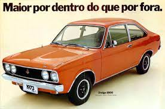
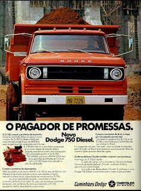

História
A Dodge tem uma longa história, no início de 1900, os irmãos John Francis Dodge e Horace Elgin Dodge decidiram construir um automóvel diferente. Começaram com a produção de peças e, em 1914, desenvolveram sua indústria automobilística. Nos anos 1920 os irmãos faleceram, e em 1928 a Dodge Brothers passou a integrar a Chrysler Corporation.
O carneiro montanhês foi adicionado em 1932 aos automóveis Dodge como ornamento do capô, simbolizando estilo agressivo, força e robustez.
Símbolo utilizado no modelo Dodge Ram
Em 1934, a Chrysler precisava aumentar as vendas do DeSoto, sua marca existente entre Plymouth e Dodge. Com isto, melhorou o acabamento do modelo e lançou na marca a nova carroceria Airflow, que era a mais cara da Chrysler. Com isto, a Dodge deixaria de ser a marca de luxo abaixo dos modelos Chrysler. Na década de 50, a Chrysler decide que a Dodge enfrente de vez sua grande rival, a Pontiac. Com isto, nasceriam novos modelos, como o Dodge Royal, focado no melhor custo e na esportividade. Fato que ficaria notório na era dos Muscle Cars, com o Charger e o Pontiac GTO surge sendo os maiores expoentes - e eternos rivais - do gênero.
Durante os anos 60, o Brasil vivia uma época de pleno crescimento na quantidade de empresas produtoras de veículos no país. Além da Volkswagen, operavam no setor automotivo as companhias DKW Vemag, IBAP, Puma, Simca e Willys-Overland do Brasil. General Motors e Ford já possuiam fábricas há muitos anos, porém a fabricação de automóveis ainda não havia começado, existindo apenas modelos importados. A Chrysler, que já havia montado modelos seus, da Dodge e da Plymouth, durante os anos 50 em regime CKD junto ao Grupo Brasmotor, via no Brasil uma grande oportunidade para a expansão de seus negócios. Para adentrar ao mercado brasileiro, a solução encontrada foi a aquisição da Simca do Brasil, divisão da francesa Simca, cuja propriedade e direitos foram adquiridos, à nível mundial, pela Chrysler Corporation. Somava-se à isso a crise enfrentada pela filial brasileira, somada aos problemas de qualidade de seus automóveis, à época.
Foi em 1967 que a Chrysler americana enviou ao Brasil o executivo Eugene Cafiero para assumir as operações da Simca do Brasil. Suas ações era coordenadas pelo colega americano Victor G. Pike, responsável pela concretização do planejamento de instalação da matriz americana no país. Num primeiro momento, todos os modelos Simca, como Chambord, o Presidente e o Esplanada, continuaram em produção, porém tiveram sua marca alterada para a empresa americana. A Chrysler do Brasil, contudo, aplicou diversas modificações aos veículos, principalmente em termos de ajustes mecânicos, com a finalidade de sanar seus problemas. O modelo Esplanada foi até enviado para os Estados Unidos a fim de ser analisado pelos engenheiros da matriz.
Mas a filial brasileira não pretendia apenas manter os modelos da extinta Simca do Brasil. Alçava voos mais altos, como reproduzir a linha americana no país e fazer frente aos novos concorrentes recém-lançados, o Chevrolet Opala e o Ford Galaxie, bem como ao veterano Aero Willys. Foi em 1969 que o primeiro fruto da investida no Brasil apareceu: era lançado o Dodge Dart, um sedã de porte médio com motor V8 de 318 polegadas(cerca de 5.2L), capaz de gerar potência entre 198cv e 215cv, dependendo da configuração.
Dodge Dart Sedan e Coupê 1970
Com a rápida ascensão de uma imagem de qualidade e durabilidade, a Chrysler do Brasil lançou vários modelos nos anos seguintes, como o Dart SE, o Dart Coupé, o Le Baron, o Magnum e o Charger, este último com apelo esportivo - tornando-se ícone da companhia no Brasil. Problemas relacionados com a crise do petróleo em 73 forçaram o departamento de engenharia a mudar configurações do motor, aumentar o tanque de combustível e acertar transmissões para tornar os veículos mais econômicos, todavia a Chrysler nunca abriu mão do propulsor - o maior do tipo já fabricado no Brasil. Outro modelo lançado em decorrência deste fator foi o Dodge Polara, cujo motor de 4 cilindros em linha oferecia consumo bem menor e performance superior aos concorrentes da época, como Chevrolet Chevette e Volkswagen Fusca.
DODGE POLARA 1800 - 1973
Dodge Charger no Brasil
O modelo chegou ao mercado em 1971 para representar uma opção mais refinada, luxuosa e potente que seu irmão Dart. O projeto foi apresentado em duas versões, sendo a mais barata LS com motor de 205 cv e a topo de linha R/T capaz de entregar 215 cv de potência.
Dodge Charger R/T 1971
A versão R/T ostentava uma grade cromada sobre os faróis e faróis de milha, estes na cor amarela. Além disso, o cupê tinha teto e colunas em vinil preto, pneus com banda de cor laranja, diferente da LS, que era branca.
Em 1973, o modelo ganhou faróis duplos e grade quadriculada em duas partes. Esteticamente, a nova versão ainda recebeu falsas entradas de ar, controle interno de retrovisor, luzes de emergência, novas lanternas e painel em alumínio escovado.
Em 1974, o veículo recebeu melhorias importantes, entre elas uma tecnologia responsável por reduzir o consumo de combustível em plena Crise do Petróleo.
Dodge Charger R/T 1975
Chamada de Fuel Pacer System, a novidade se baseava em um alerta visual na luz guia de direção exterior, quando era detectado consumo excessivo, indicando ao motorista para pegar leve nas acelerações, já que “afundar” o pé no acelerador gerava mais consumo.
Esteticamente, o modelo voltou a usar as faixas laterais nos para-lamas traseiros, tal como entradas de ar falsas redesenhadas e portas pintadas de preto com friso cromado.
No ano seguinte, a Chrysler introduziu uma campanha de troca de peças grátis até 12.000 km rodados ou seis meses de uso, mesmo já tendo garantia de dois anos ou 36.000 km rodados.
Em 1976, o Dodge Charger perdeu a versão de entrada LS e algumas modificações mecânicas fizeram a versão solo R/T perder potência, passando a gerar “apenas” 205 cv de potência.
Chegando ao fim dos anos 70, o Charger recebeu ajustes no carburador para reduzir ainda mais o consumo de combustível. Mais alterações estéticas foram feitas e na linha 79, o modelo recebeu a companhia do cupê Magnum ao lado do Dart.
Quanto ao posicionamento no mercado, a chegada do Magnum fez o Charger descer um degrau, porém, o clássico ainda tinha atributos importantes. O Charger foi o primeiro carro nacional com rodas de magnésio e na linha 80, ganhou uma nova caixa automática, já no período VW, que adquiriu a Chrysler do Brasil no início de 1979.
Depois de exatos dez anos, a produção do Dodge Charger chegou ao fim por aqui. Além dele, todos os modelos da Chrysler, inclusive os caminhões, pararam de ser produzidos no Brasil em 1981.
Para se ter dimensão do sucesso dele no Brasil, até 1981, o Dodge Dart e seus derivados (como o Charger), tiveram 93.008 unidades fabricadas e comercializadas por aqui. Um número de respeito!
Comercial Dodge Charger R/T
DODGE MANGNUM
O Magnum é um veículo tipo coupe de porte médio-grande da Dodge.
No Brasil o Dodge Magnum foi um carro produzido pela Chrysler do Brasil de 1979 a 1981, para a substituição dos Dodge Dart Gran Coupe, descontinuados desde 1975.
Todo os Dodges V8 do Brasil, o Magnum incluído neste artigo, são baseados no Dodge Dart 1968-1969 dos Estados Unidos da América (EUA), com carroceria chamada de A-Body e com o motor V8 de 318 polegadas cúbicas (nos EUA era considerado um modelo compacto).
Os modelos de Dodges V8 (coupé ou sedan) de 1979 a 1981 (Dart, Charger R/T, Magnum e Le Baron, foram feitos com novas frentes e traseiras a fim de ficarem semelhantes ao Modelo Dodge Dart Swinger 1970 a 1976 dos EUA, com um pequeno diferencial na grade frontal do Modelo Magnum (coupe) e LeBaron (Sedan) que possuíam uma Grade Única, exclusiva (em fibra de vidro), fabricada apenas no Brasil a fim de parecerem mais requintados.
O ano/modelo 1979 ao 1981 vinha com rico acabamento fazendo questão do uso de cromados, nas calotas, para-choques, frisos, e detalhes. Seu acabamento também era considerado no Brasil como um grande requinte, tendo teto em vinil de várias cores, e opcionais como ar condicionado, cambio automático, teto solar e pneus radiais. O espaço interno era semelhante, mas não maior, que no Dodge LeBaron, um Sedan com 4 portas com a mesma grade frontal, por ser um Coupé. Os Dodges Sedan (todos os V8 do Brasil, os modelos Dart, Dart de Luxo e o LeBaron) eram por definição alguns centímetros mais altos que os Coupés, isso se verifica claramente nos tamanhos dos vidros de para-brisas e de vigias.
No fim de 1978, a Chrysler do Brasil já apresentava e começava a fabricar alguns modelos Dodge Magnum, já como modelo de 1979.
DODGE LE BARON
O novo sedã da Chrysler brasileira começa a convencer quando se verifica o cuidado que foi dispensado ao seu interior, com bancos muito confortáveis, estofamento em veludo acrílico com desenho de bom gosto, painéis laterais combinados e capricho em todos os detalhes.
Mas a impressão se completa mesmo é ao rodar com o Le Baron. A suspensão recebeu uma recalibragem que a tornou mais macia e não houve economia na utilização de material antiacústico. Como resultado, o novo sedã da Chrysler roda suave e silencioso como um Galaxie LTD, e supera, nesses itens, um Alfa TI.
Acabamento perfeito, surpreendente maciez ao rodar, elevado nível de silêncio e conforto internos. Estes são os pontos que mais se destacam no Le Baron, o novo sedã de alto luxo da Chrysler.
Com esse lançamento, a fábrica entra decididamente na briga pela mais elevada faixa do mercado consumidor, competindo diretamente com os modelos Galaxie e Alfa Romeo.
Para dar “status” e personalidade ao carro, a fábrica incorporou na linha de montagem praticamente todos os itens que poderiam ser desejados como opcionais. Assim, a direção é sempre hidráulica, vidros ray-ban, para-brisa degradê; há um ótimo rádio AM/FM estéreo conjugado com toca-fitas, dotado de bons alto-falantes e antena elétrica automática.
No painel destaca-se um relógio de quartzo; a ignição é eletrônica; faróis duplos do tipo bi-iodo; bancos muito confortáveis para quatro pessoas, quando se pode baixar os braços centrais escamoteáveis, formando praticamente quatro poltronas. Para o Le Baron, enfim, só há dois opcionais: o ar-condicionado e a transmissão automática, todo o resto é de linha.
O carro recebido para testes estava completo e seu preço, nessas condições, chega aos 258 mil cruzeiros. Sem ar-condicionado e com câmbio mecânico, fica na casa dos 221 mil (em outubro, 8% de aumento).
O consumo de Le Baron é adequado ao modelo e ao público a que se destina. Durante o teste, acusou média geral de 5,9 km/l, sendo 5,2 km/l na cidade e 7,4 km/l na estrada. Com o ar-condicionado ligado há uma perda de 10 a 12 por cento no gasto de combustível.
Seu tanque de 107 litros lhe dá uma autonomia de 700 quilômetros em rodovia, a velocidades constantes, e de mais de 400 quilômetros em cidade.
Le Baron 1978
Caminhão Dodge 750 Diesel
Declínio e extinção
Em 1980, a Volkswagen do Brasil adquiriu todas as ações da Chrysler do Brasil, desligando o controle americano sobre a filial brasileira. As intenções eram claras, abrir mercado eliminando os concorrentes. Desse modo, em 1981 a Chrysler do Brasil encerrou suas atividades, mantendo apenas a produção de uma espécie de caminhão voltada para o uso rural, até 1984. Ao todo, a Chrysler esteve presente durante 3 oportunidades no país; nos anos 50, mediante a joint venture com a Brasmotor, entre 1967 e 1981 com sua companhia e entre 1998 e 2002, com a divisão Dodge, que produziu a pick-up Dakota
.Desde 2009 sob controle do grupo Fiat Spa., a Chrysler pretende retornar ao Brasil pela 4.ª vez, entretanto não divulgou planos, nem modelos. Contudo, informações davam conta de que o veterano modelo Dodge Dart deveria ser fabricado pela Fiat no Brasil, em sua nova geração, sob o nome de Fiat Tempra,[7] em menção ao antigo sedan médio grande vendido pela companhia italiana entre 1992 e 1998.